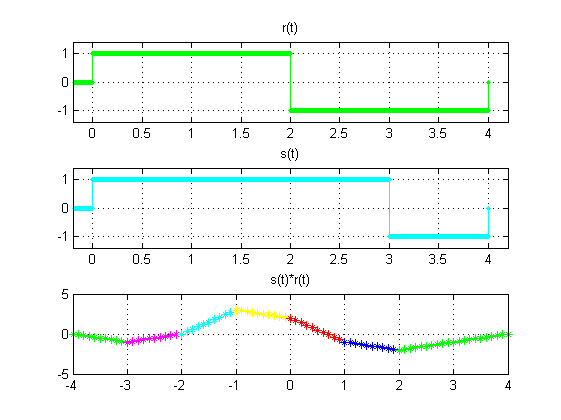

P R Á C T I C A 4 : CONVOLUCIÓN Y CORRELACIÓN DE SEÑALES EN TIEMPO CONTINUO
- Castillo Silva Marlene Vanessa
- Andoney Valdez Daniel
Contents
I N T R O D U C C I Ó N
¿Qué es la convolución en tiempo continuo?
Mediante la convolución calcularemos la respuesta de un sistema (y(t)) a una entrada arbitraria (x(t)).
¿Qué es la correlación en tiempo continuo?
Es una operación similar a la convolución, pero en la correlación no tenemos que “reflejar” una de las señales. La correlación nos da una medida de la similitud entre dos señales. Al no existir la propiedad de conmutación existen dos correlaciones una es xy, y la otra es yx.
P R O B L E M A 1
x_t=@ (t) (-t+1).*(escalon(t)-escalon(t-1))+(t-1).*(escalon(t-1)-escalon(t-2)); h_t=@ (t) escalon(t)-escalon(t-1); imagen3(); % graficas de manera analítica fig(); % convolución convconm1(x_t,h_t)

P R O B L E M A 2
f_t=@(t) t.*escalon(t) - (t-1).*escalon(t-1)- escalon(t-2); g_t=@(t) (escalon(t-1))-(escalon(t-3)); imagen4(); figu2(); convconm2(f_t, g_t);

P R O B L E M A 3
c_t= @(t) escalon(t)-2.*escalon(t-3)+escalon(t-4); imagen1(); figu3(); convconm3(c_t);
P R O B L E M A 4
r_t=@(t) escalon(t)- 2.* escalon (t-2)+escalon(t-4);
s_t=@(t) escalon(t)-2.*escalon(t-3)+escalon(t-4);%estatica
imagen2();
figu4();
convconm4(r_t, s_t);
 R E F E R E N C I A S
http://www4.tecnun.es/asignaturas/tratamiento%20digital/tema2.pdf
http://www.unet.edu.ve/aula10c/Asenales/Unid01/cuarto05.html